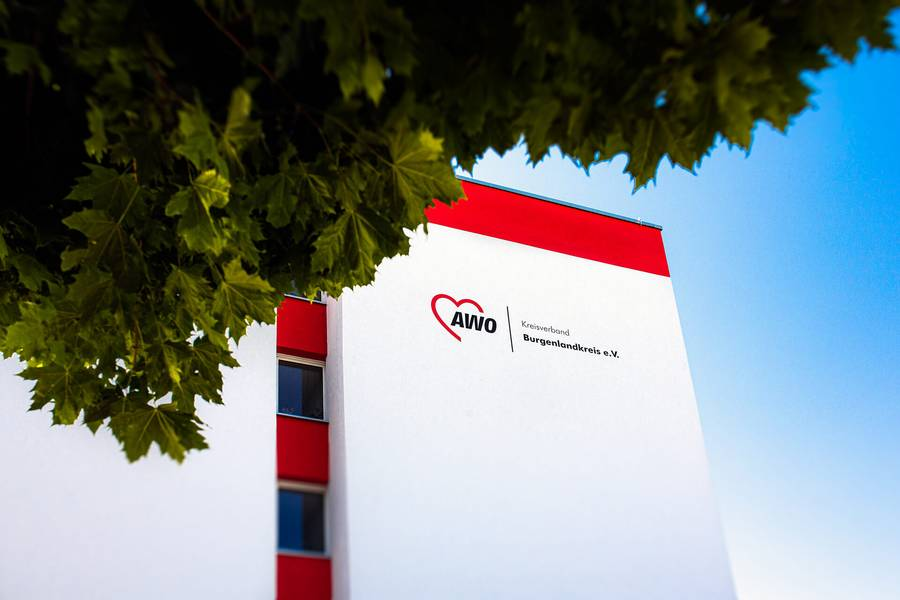

Pflegen im Burgenlandkreis. Mit Wunschdienstplan.
Altenpflegeheim, Seniorenzentrum, Tagespflege oder ambulant auf Tour: Bei der AWO arbeiten Sie dort, wo Sie wohnen, mit einem Dienstplan, der sich nach Ihren Wünschen richtet.
Kein Lebenslauf nötig. Wir rufen innerhalb von 24 Stunden zurück.
Vier offene Stellen ansehen
Was Sie bei uns bekommen
So steht es in unseren Stellenausschreibungen. Ohne Sternchen.
Wunschdienstplan
Sie sagen, wann Sie können. Der Dienstplan richtet sich danach.
Bezahlung über dem Durchschnitt
Dazu jedes Jahr eine Gehaltserhöhung. Gehaltsrahmen: von der AWO zu ergänzen
30 Tage Urlaub
Dazu eine jährliche Sonderzahlung.
Kostenlose Massagen
Regelmäßige physiotherapeutische Massagen, kostenlos für Mitarbeitende.
Betriebliche Altersvorsorge
Ein sicherer Arbeitsplatz bei einem Träger, der seit über 30 Jahren hier ist.
Digitale Dokumentation
Pflegedokumentation am Gerät statt auf Papier. Dazu betriebliche Entwicklungs- und Fortbildungsmöglichkeiten.
Wo Sie arbeiten können
Vier Orte im Burgenlandkreis, ein Träger.

Alten- und Pflegeheim
80 Seniorinnen und Senioren, mitten im Zentrum. Mit Cafeteria, Friseur und eigener Küche.

Ambulanter Pflegedienst und Tagespflege
Touren in Zeitz, Hohenmölsen, Teuchern und Umgebung. Tagespflege montags bis freitags von 8 bis 16 Uhr.

Seniorenzentrum „Am Rosengarten“
63 Bewohnerinnen und Bewohner auf vier Etagen. Hier bilden wir auch aus, mit Übernahmegarantie.
Offene Stellen
Jede Stelle hat eine eigene Seite mit allen Angaben. Die Bewerbung dauert eine Minute.
So läuft es ab
Sie hinterlassen Ihre Nummer
Name, Telefon, Qualifikation, Wunschstunden. Eine Minute vom Handy, ohne Unterlagen.
Wir rufen zurück
Innerhalb von 24 Stunden meldet sich die Leitung der Einrichtung bei Ihnen. Sie klären Dienstzeiten und Gehalt am Telefon.
Sie lernen das Team kennen
Ein Gespräch in der Einrichtung Ihrer Wahl. Danach entscheiden beide Seiten. Ablauf mit der AWO abstimmen
In einer Minute bewerben
Kein Lebenslauf, kein Anschreiben. Zeugnisse bringen Sie zum Gespräch mit.
„Platzhalter: ein Satz einer Kollegin aus dem Pflegedienst, mit Vorname, Funktion und Jahren bei der AWO.“
Von der AWO zu ergänzen, am besten mit Foto.Lieber per Post oder Telefon? AWO Kreisverband Burgenlandkreis e. V., z. H. Frau Witt, Clara-Zetkin-Straße 20, 06679 Hohenmölsen. Telefon 034441 44530.